Bypassing Programs's Read-Only Code Protection (crc32)
Games often have neat anti-cheating system that prevents hackers from rewriting its codebase. Some games remap themself when it gets started and then puts protections in action. Inside the game's code are CRC32 integrity checks that scan memory regions (including the .text section of the game) to check whether the code has been modified.
You should not be able to write to the game module in the first place because it's page protection is set to Execute/Read Only. You can, of course, remap the game and change page protection to Read/Write/Execute, but then the integrity checks (crc32) will detect the modification and the game will crash. This whole crc32 integrity check is a big deal, we can no longer make use of software breakpoints, detours, changing constants (.rdata is Read-only and also checked), etc for as long as this protection is in place. Today I will be showing you how I have bypassed the integrity checks.
Integrity checks
In order to find them, we need to know how they look like. Rumors go that the game developer was too lazy to perform the crc32 themself so they just used the CRC32 assembly instruction instead. A quick google search for "x86_64 crc32" leads me to a website containing a table of all possible CRC32 instructions.
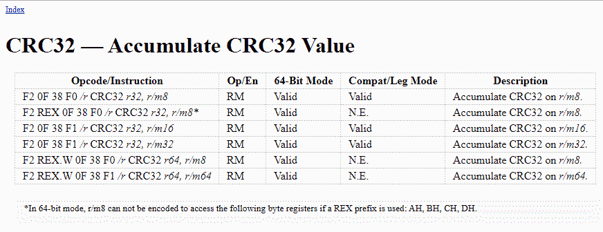
- https://www.felixcloutier.com/x86/crc32
We can use the bytes listed in the table and create a permutation used to find the CRC32 instructions in the games memory. But after doing that I noticed the game only uses the last opcode shown in the table, so our pattern to find all CRC32 instructions look like this "F2 ?? 0F 38 F1 ??". Below is the result using Cheat Engine, 9 CRC32 instructions have been found.
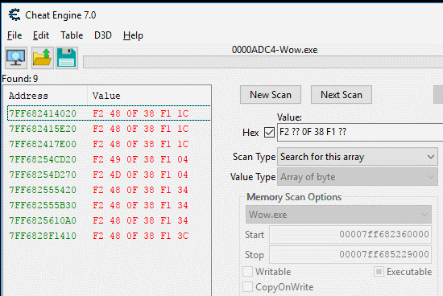
And this is how they look like in the disassembler.
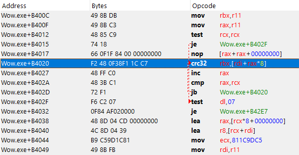
How to bypass
For the bypass, we are going to detour the original CRC32 instructions and do our own calculations. The main modification we do in our calculation is that we will check what memory region is targeted so we can spoof the input when needed. My goal was to bypass the game's .text location, the pseudo-code below is how my modified version of the calculation looks like.
LONG scanRange = rdi; // crc32 rsi,[rdi+rax*8] //NOTE: scanRange is the second register (in this case Rdi) LONG wowFake = wow_2.exe; // wow_2.exe is a copy of wow.exe that is mapped into memory // without any modification (and thus results in correct CRC32 output) LONG wowTextStart = *(LONG*)(wow.exe+0x274); LONG wowTextEnd = wowTextStart + *(LONG*)(wow.exe+0x278); if(scanRange >= wowTextStart || scanRange <= wowTextEnd) { scanRange -= wow.exe; // Subtract scanRange by wow.exe base and scanRange += wow_2.exe; // Add the base of the copy'd wow memory // resulting in a CRC32 call that is performed on the orginal wow memory } crc32(); // original CRC32 instruction will be performed return; // return to where we got called
Writing some code
Alright, all we have to do is remap the game, set Read/Write/Execute flag, modify all CRC32 checks, and load a copy of the game into memory to spoof the CRC32 with. Time to open up Visual Studio and start writing some code.
I forked my friend's remapper at https://github.com/Evulpes/Remap-Memory-Region and implemented the CRC32 bypass feature. Oh and yes, C# is still my favorite language of choice so here is a big fuck you to the haters.
The remapping
Most of the remapping is already taken care of by the code I have forked. But let's not forget that we have to map the game twice into memory so we have a legit copy of the game that we use to perform our CRC32 checks on. To do that I simply allocated memory with a size equal to the size of the game module and then copied the bytes to the allocated memory.
The Bypass
After the remap is done we can start searching for the CRC32 instructions and detour them, the code below is used for that.
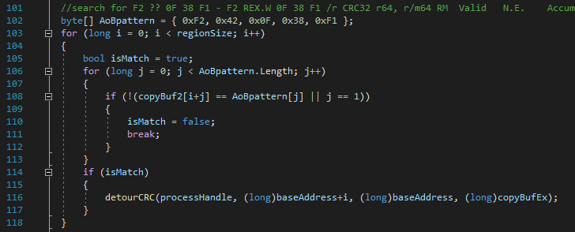
The AoBpattern is a byte array that should represent our pattern we used before, "F2 ?? 0F 38 F1". Notice that the second byte (0x42) is not a wild mark, instead, we hardcoded that index 1 of the array is a wild mark. When all other bytes match our pattern, the detourCRC function is called and the location of the CRC32 is given as argument. In the detourCRC functions are two important things going on. One is creating the detour and the other one is writing the code cave (pseudo code explained in How to bypass).
Writing the detour
The assembly of the detour looks like this
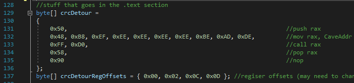
We start by push rax onto the stack, this is done to save the original value of rax. Then we move a QWORD into rax, this QWORD is the address to the corresponding code cave. Once it's in rax, we perform a call on it and then we pop rax, this is done to restore the value that rax was holding before our detour.
This is pretty straight forward, but we do have to keep an eye on the register that was used to perform the call. The code cave might result in a crash when rax is used in our code cave, so we may have to use another register instead. Changing the register isn't that much of a pain in the ass, all we have to do is increase the byte representing that instruction. You can see I have an array on line 137 that holds the location for each byte instruction using rax. Some instructions might use more than a single byte, so you have to google which byte you should increase. You can see the array crcDetourRegOffsets is put to use below.
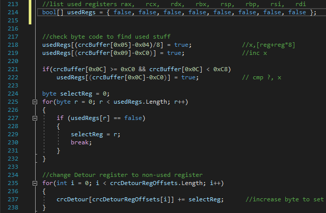
First, we have to find out which registers are used before we can modify the rax used in our detour. To find out which byte represents which register we could use a disassembly library, but hey, what's the fun in doing that? So I decided to do everything myself to get the most fun out of this project.
The only instructions we care about are the CRC32, the INC and the CMP instruction that are originaly copied from the game base (as shown here). Those three instructions are located next to each other, one thing to keep in mind is that the length of the bytes used for these instructions isn't always the same. We should now figure out which registers are used in those instructions so that we can find out which registers we can use in our detour/code cave without messing up.
After playing around in Cheat Engine I had figured out that the bytes at location 0x05, 0x09 and 0x0C (starting from the crc32 instruction) are holding register values we need to take care of. For example, have a close look at line 219, this will check which register is used at the INC instruction. The INC instruction uses 3 bytes, the third byte contains the value of the register, so we can just subtract the third byte by 0xC0 and obtain the index of the used register. I then set a value of the boolean array (usedRegs) to true at the location of the index register as seen in the image below.
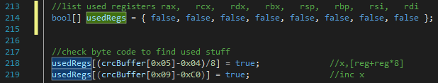
Oh, and let's not forget to add a couple of NOP's to prevent the code cave from returning to some invalid opcodes. We will use a new byte array crcDetourFixed and make it as long as the original bytes we are replacing (the length is stored in origCrcInstructionLength more details on that in a minute at Writing the code cave). The original bytes get moved into the array, and all the extra bytes will be set to 0x90 which is the NOP (No Operation) instruction.
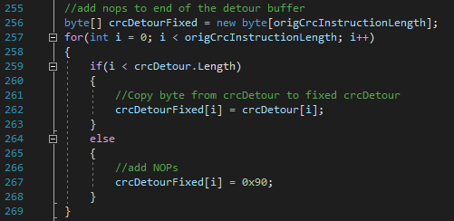
Writing the code cave
For the code cave its pretty straight forward, check if the targeted memory address is at the .text section of the game, and then modify the targeted memory address to point at our copied version (aka wow_2.exe). The assembly instructions of the code cave are shown below and they should do exactly what's described at How to bypass.
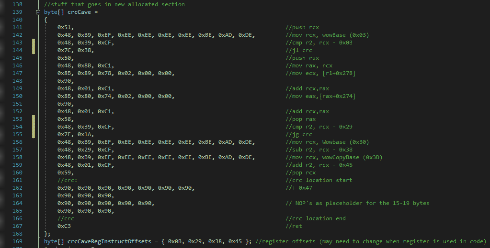
The crc32 instructions aren't always using the same registers, and the INC and CMP instructions after it may not have the same byte length, the length may be different depending on if any of the r8 ~ r15 register is used.
To figure out the length of those 3 instruction I used the following code which just scans until it finds a 0x72 byte, this byte represents the start of a JB or "Jump short if below/carry" instruction. This JB instruction is located right after the 3 other instruction and is two bytes long, the second byte of the JB instruction is used to determine the destination of the jump, so it's safe to assume that the first byte is static and that we can use this to identify the end of our 3 other instructions.
The code below is used to copy the bytes of the 3 instructions (CRC32, INC, CMP) into crcBuffer (Note that the jump instruction is also included, but we do not care about this instructions since it doesn't access any registers).
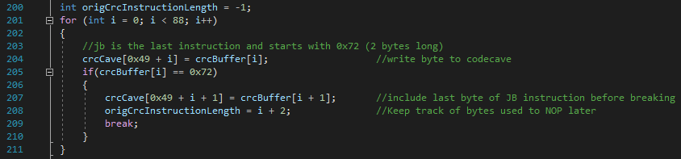
Once again we have to double-check which registers are being used. Our scanRange value should be the second register from the crc32 instruction. As you can see I have put an array (crcCaveRegInstructOffsets) underneath the code cave (line 169) that should represent the locations of the instructions that need to be modified. The code below will show you exactly how those registers will get modified.
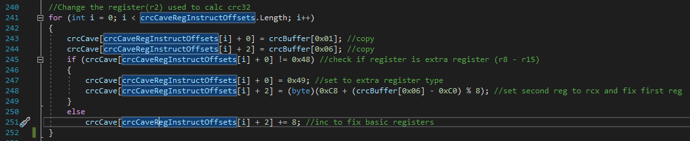
You can see that we basically copy the first and the third byte from the crc32 instruction to make sure that our scanRange variable is set correctly in the code cave. Finally, we have to write a couple of QWORD's into the code cave (and one into the detour), remember that Windows is using little-endian so make sure our bytes are set in the correct order.
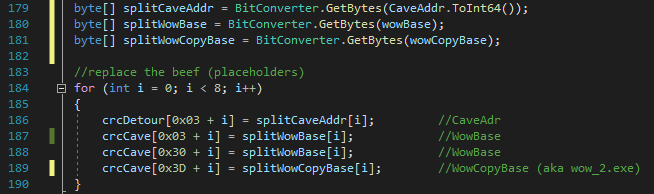
Writing to memory
Now that both the detour and the code cave buffer are read, we have to write it to memory and we are good to go.
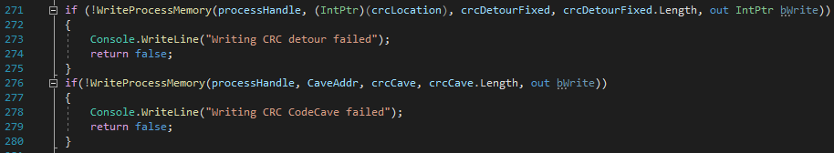
Repeat this process for all the CRC32 instruction that we have found, complete the manual mapping and we are good to go. We can now write to the game .text section without any crash.
Result
This is how our detour looks like in the disassembler.
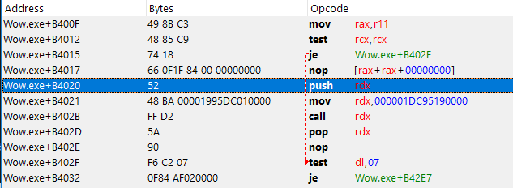
And this is how our code cave looks like in the disassembler.
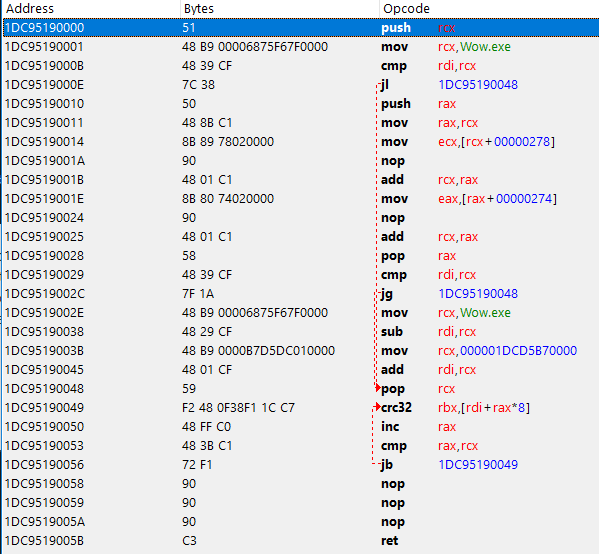
Congratulations, if you are still reading it means that you made it through the whole writeup! Or if you just scrolled down hoping to find a GitHub link, then scroll a little more.
The whole project can be found here on github.
Conclusion
Hacking games is pretty hard these days.. it seems that hacking a stupid video game is 10 times harder compared to hacking my schools exam system (as seen in this previous blogpost).
Warning
This blogpost is for educational purposes only. please do not perform any of the above actions on any game client.